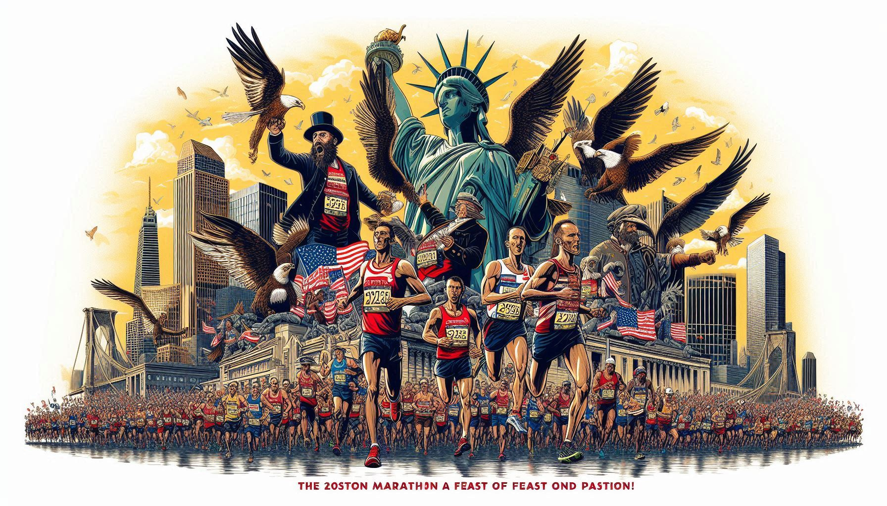

Agregar Nuevo Artículo
Artículos Agregados
Total de artículos: 0
Últimas Noticias

La Maratón de Boston 2025: Una Fiesta de Resistencia y Pasión
Miles de corredores de todo el mundo se reunieron este abril para participar en la icónica Maratón de Boston. Considerada una de las pruebas de resistencia más exigentes y prestigiosas, la edición 2025 fue un despliegue de energía, emoción y espíritu deportivo. El atleta keniano Eliud Kipchoge, a sus 40 años, sorprendió al mundo al finalizar con un tiempo récord para su edad. Mientras tanto, miles de corredores aficionados demostraron que el verdadero triunfo está en el esfuerzo y la dedicación que requiere completar los 42,195 kilómetros de recorrido.
Final de la Champions League: Una Batalla de Titanes
La final de la UEFA Champions League 2025 será recordada como una de las más intensas de la historia. El Real Madrid y el Manchester City se enfrentaron en un duelo que mantuvo a millones de fanáticos al borde de sus asientos. Tras un empate 2-2 en el tiempo reglamentario, todo se decidió en la tanda de penales, donde la sangre fría de los jugadores blancos se impuso para coronarlos campeones. Este título marca la 15.ª copa europea para el club madrileño, consolidando aún más su leyenda en el fútbol mundial.
Juegos Olímpicos de Invierno 2026: El Regreso de la Magia Blanca
Con temperaturas bajo cero y escenarios naturales impresionantes, los Juegos Olímpicos de Invierno 2026 en Milán y Cortina d'Ampezzo prometen emociones inolvidables. Atletas de todo el planeta ya se preparan para competir en disciplinas como el esquí alpino, el patinaje artístico y el hockey sobre hielo. Especial atención merece la joven patinadora japonesa Aiko Tanaka, de solo 17 años, quien llega como favorita para llevarse el oro. Los Juegos no solo celebran el espíritu deportivo, sino también la unión entre culturas bajo el manto de la nieve.
Noticias Anteriores
El Real Madrid gana la Champions
Categoría: Fútbol
El Real Madrid reafirmó su dominio en Europa al coronarse campeón de la UEFA Champions League 2023/24, tras imponerse 2-0 al Borussia Dortmund en la final disputada en el estadio de Wembley. Con este triunfo, el club blanco alcanza su decimoquinto título en la máxima competición continental, ampliando su récord como el equipo más laureado de la historia del torneo .
El marcador se abrió en el segundo tiempo con un gol de Dani Carvajal, quien aprovechó un tiro de esquina para adelantar al Madrid. Minutos después, Vinícius Jr. sentenció el encuentro con una definición precisa tras una asistencia de Jude Bellingham, asegurando la victoria para los dirigidos por Carlo Ancelotti .
La UEFA nombró a Dani Carvajal como el Jugador del Partido, destacando su desempeño tanto en defensa como en ataque, incluyendo el gol que abrió el camino al título .
Más de 86.000 aficionados presenciaron la final en el icónico estadio londinense, que se tiñó de blanco con la presencia masiva de seguidores madridistas. La victoria fue celebrada con entusiasmo tanto en el estadio como en las calles de Madrid y otras ciudades del mundo .
Con este título, jugadores como Toni Kroos, Luka Modric, Dani Carvajal y Nacho Fernández suman su sexta Champions League, igualando el récord de Francisco Gento como los futbolistas con más Copas de Europa en la historia.
El Real Madrid continúa escribiendo su leyenda en el fútbol europeo, demostrando una vez más por qué es considerado el "Rey de Europa".

Juegos Olímpicos 2024: Lo que debes saber
Categoría: Olimpiadas
Los Juegos Olímpicos de París 2024 se celebraron del 26 de julio al 11 de agosto, marcando el regreso de la máxima cita deportiva mundial a la capital francesa después de un siglo. Con una participación de más de 10.000 atletas de 206 países, incluidos los equipos olímpicos de refugiados y atletas rusos compitiendo bajo bandera neutral, los Juegos ofrecieron 329 eventos en 32 deportes, incluyendo disciplinas como el breakdance, el surf y la escalada deportiva.
Ceremonia de apertura única
La inauguración fue histórica: por primera vez, se celebró fuera de un estadio. El río Sena se convirtió en la pasarela flotante para las delegaciones, que desfilaron en barcos desde el Pont d'Austerlitz hasta el Trocadéro, frente a la Torre Eiffel. A pesar de la lluvia, el evento fue un espectáculo de luz y música, con Céline Dion encargada de encender el pebetero olímpico.
Los logros más sobresalientes
Novak Djokovic logró el Golden Slam al ganar su primer oro olímpico en tenis.
Armand Duplantis batió su propio récord mundial en salto con pértiga con un salto de 6,25 metros.
Katie Ledecky igualó el récord de medallas de oro olímpicas, alcanzando las 9.
Diana Taurasi (EE. UU.) se convirtió en la primera basquetbolista en ganar oro en seis Juegos Olímpicos consecutivos .
Legado y sostenibilidad
París 2024 dejó un legado más allá de las medallas: la ciudad implementó proyectos sostenibles y de calidad de vida urbana, como la recuperación del Sena y la transformación de Los Campos Elíseos. Además, la organización demostró que es posible integrar el deporte con el patrimonio histórico y cultural de una ciudad .

Nueva marca mundial en atletismo
Categoría: Atletismo
La atleta etíope Tigst Assefa ha marcado un hito en el atletismo al establecer un nuevo récord mundial femenino en la categoría de maratón solo para mujeres. En la edición de 2025 del Maratón de Londres, Assefa completó la prueba en 2 horas, 15 minutos y 50 segundos, superando el récord anterior de 2:16:16 establecido por la keniana Peres Jepchirchir.
Assefa, medallista de plata en los Juegos Olímpicos de París 2024, atribuyó su éxito a las condiciones climáticas favorables y a una estrategia de carrera bien ejecutada. Durante la competencia, logró una separación decisiva en los últimos kilómetros, dejando atrás a la keniana Joyciline Jepkosgei, quien finalizó en segundo lugar con un tiempo de 2:18:44, y a la campeona olímpica Sifan Hassan, quien ocupó el tercer puesto con 2:19:00.
Este logro no solo destaca el talento y la dedicación de Assefa, sino que también subraya el creciente dominio de las corredoras etíopes en el ámbito de las maratones internacionales. Su victoria en Londres es un testimonio de su perseverancia y de la evolución del atletismo femenino a nivel global.